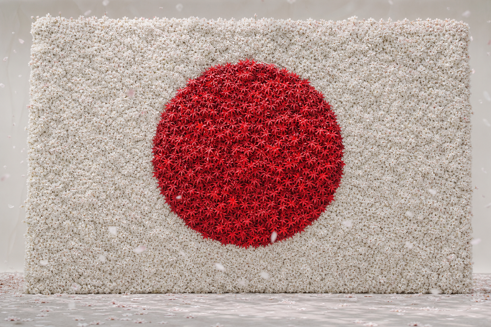
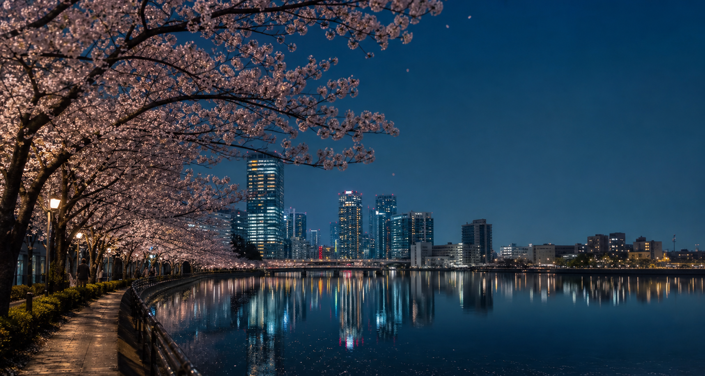
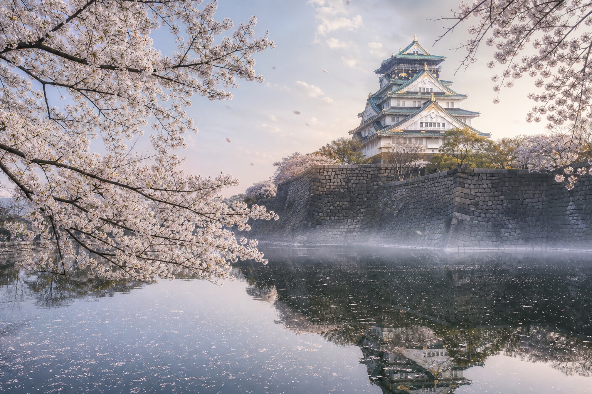
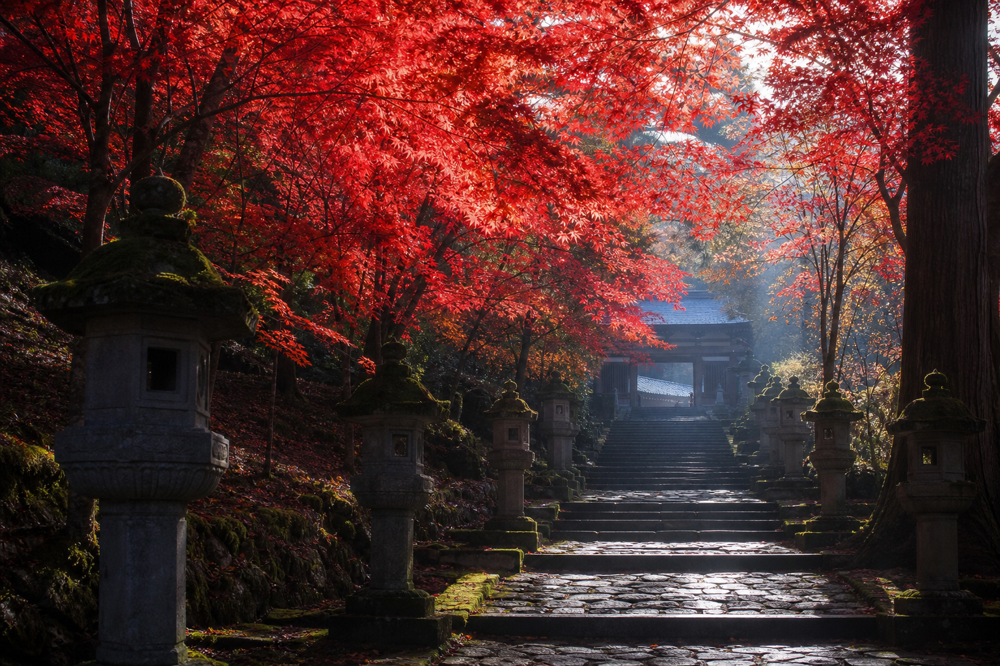
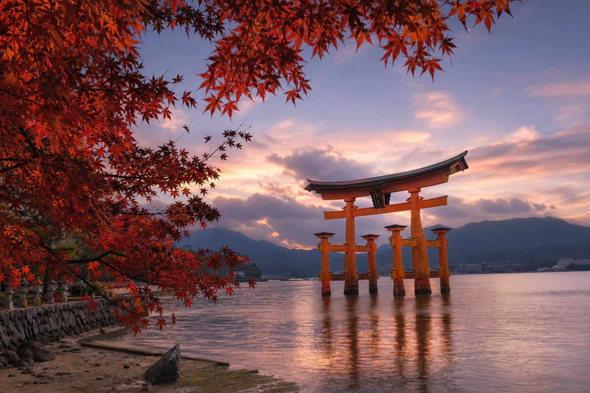

THE RED OF JAPAN · A TALE OF TWO SEASONS
春日成花
秋日成叶
樱花把春天铺成一片白，红叶把秋天聚成一轮红。
两个季节，共同完成一面日本的旗。

01 · THE WHITE / TOKYO
白色并非空无，
它正在东京盛开。
夜色让樱花更接近白。无数花冠沿水岸连成一片，像国旗上尚未被红日占据的春风。

02 · THE WHITE / OSAKA
城与花相遇，
白色有了轮廓。
樱枝越过城墙与水面，把历史建筑包进春日的留白。旗面的白，不再抽象，而是一座城市共同的花期。

03 · THE WHITE / HIROSAKI
一朵花很轻，
千万朵便成为白。
弘前城外，花瓣比残雪更轻，却足以覆盖河岸与天空。旗面的白，因此有了呼吸与层次。
04 · THE WHITE / YOSHINO
当一整座山盛开，
白便抵达完整。
从山脚到云雾，樱花一层层铺开。千万朵花共同完成国旗的底色，也完成春天最辽阔的留白。

05 · THE RED / KANAZAWA
秋天的第一枚叶，
点亮中央的红。
红叶从树梢落入水中，颜色开始向中心靠拢。它不是印刷出的圆，而是一整个秋天的聚集。

06 · THE RED / KYOTO
一枚叶很小，
整座京都便成为红。
木格窗、石径与枫叶彼此映照。越来越多的红向内汇聚，国旗中央的太阳开始拥有纹理。

07 · THE RED / NIKKO
红叶越过石灯，
向太阳中心聚拢。
日光的山门与石阶给红色一条向内延伸的路径。叶片越密，中央那轮秋日太阳便越接近完整。


继续滚动 · 从樱花之白走向红叶之红
桜の白 · 紅葉の赤
ONE FLAG · TWO SEASONS
一面旗
两种季节的美。
白，是樱花游荡的春风；红，是枫叶聚成的秋日太阳。熟悉的日本国旗，因为花与叶而第一次拥有了时间、触感与生命。
樱花之白＋红叶之红＝日本之旗